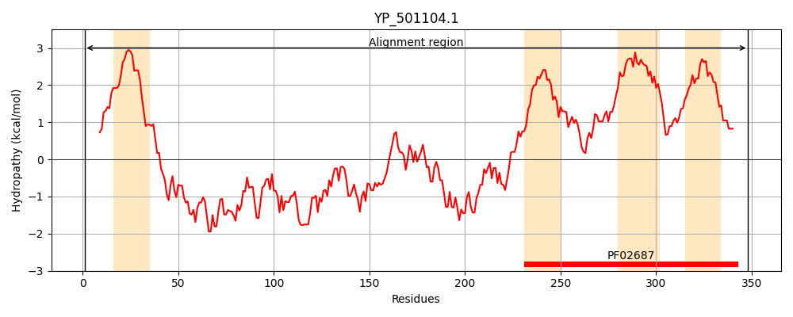
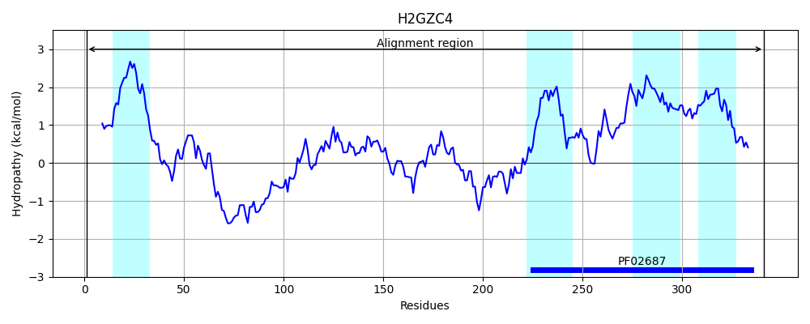
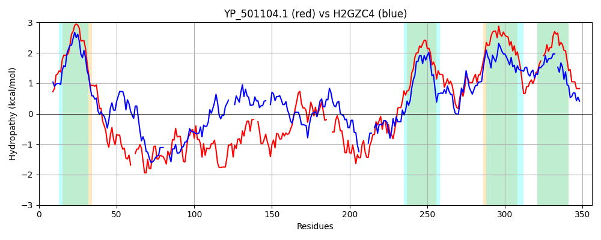

Hit Accession: H2GZC4
Hit TCID: 3.A.1.122.11
Hit Description: gnl|BL_ORD_ID|5038 gnl|TC-DB|H2GZC4|3.A.1.122.11 ABC transporter system involved in hemin toxicity inner membrane protein OS=Corynebacterium diphtheriae (strain ATCC 27012 / C7 (beta)) GN=hrtB PE=4 SV=1
Mach Len: 356
e:0.000000
Query TMS Count : 4
Hit TMS Count: 4
TMS-Overlap Score: 3.300000
Predicted Substrates:CHEBI:24493;hemin
BLAST Alignment:
Score: 212 , Bit scores: 86 bits, E-value: 5.4e-19, Alignment length: 356, Percentage identity: 24
Query: 1 MKLAIKEIMFYKFRYILITLIILLLSIMVLFISGLAQGLGRENISLFEHFDNDEYVVQKM--KEPQIEKSQLSDTQQNQIKKVIHQEPYKMNIQTLKLSNKEQDVITMNDVKQQRIQLKKGDYPKNAHEVAINDKLAAD--NIRVGDRLHFKNNSTSYRVSGILNDTMYAHSSIVLLNDNGFNALN---KVNTAFYPVKNLTQQQRDELNKINDVQVVSEKDLTGNIASYQAEQAPLNMMIVSLFAITAIVLSAFFYVMTIQKISQIGILKAIGIKTRHLLSALVLQILTLTIIGVGIAVIIIVGLSFMMPVTMPFYLTTQNIL-LMVGIFILVAILGASLSFIKLFKVDPIEAIG 348
M L I++I R+ LI ++ L++++++ ++GL QGLG++N S E V P+ S++S+ Q + K P ++ ++ M + + G + + A+ AD ++R GD H + V+G + Y+H+ +V ++ + ++ V T + T Q +D N+V V K + +Y++E++ L M L+ I+A+V +F V T+Q+ I +L A+G R+LL + Q + GV + I L + + ++PF L ++L +GI++L ++GA+++ + KVDP A+G
Sbjct: 1 MFLGIRDIRAAAGRFALIASVVGLITLLIVMLTGLTQGLGKQNTSAIEALAPHSVVFTTAGGSSPEFTSSEISEQQAERWK---DSTPLGVSQTRIESDQNANTTAVMGLPEGTPLPDSVGGF---IEQGALLPAELADFLHVRAGD--HITLGGATVTVAGTVKTENYSHTPVVWVDTATWQLVSHTKAVGTVLLLNQEPTIQPQD-----NEV-VTDLKGAFQAMPAYKSERSSLVSMQAFLYIISALVTVSFLTVWTLQRTRDIAVLAALGASKRYLLIDALGQAAIILAAGVALGAGIGALLGWFIAGSVPFSLGWVSVLGPALGIWLL-GLIGATIAVRNVTKVDPQIALG 341 | Protein Hydropathy Plots: |
|---|
|  |  |
Pairwise Alignment-Hydropathy Plot:
|
|---|
|  |